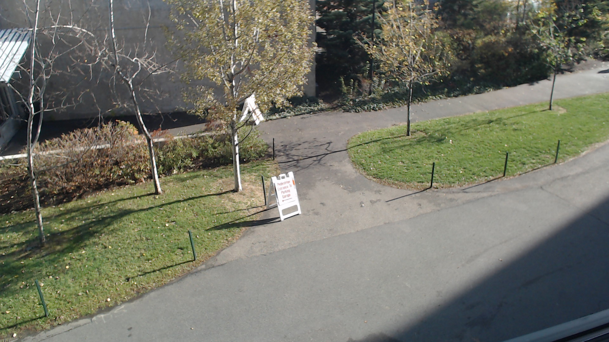
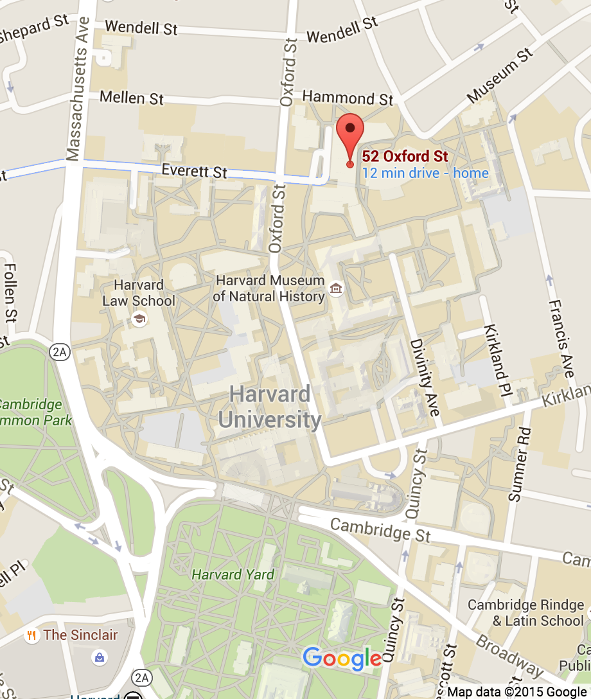
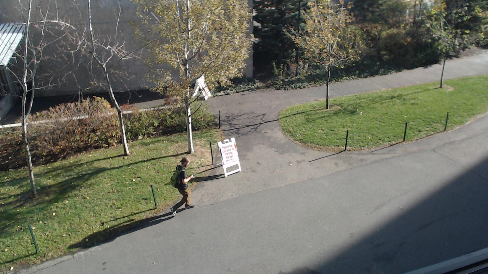
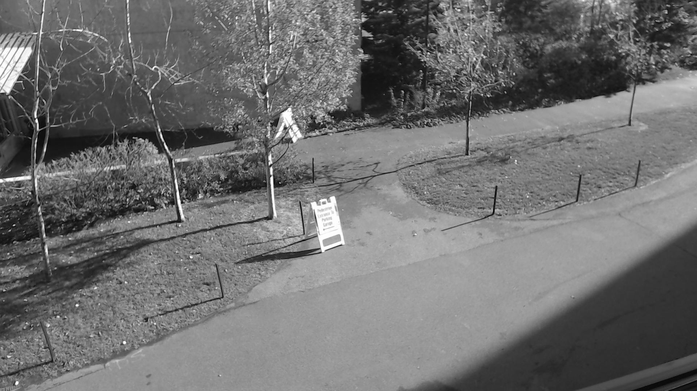
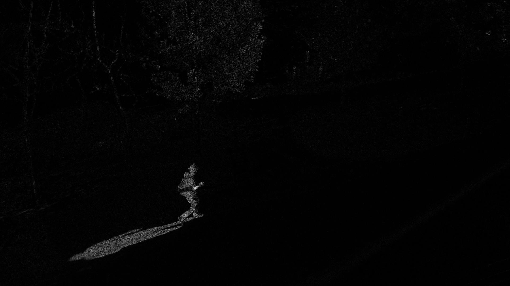
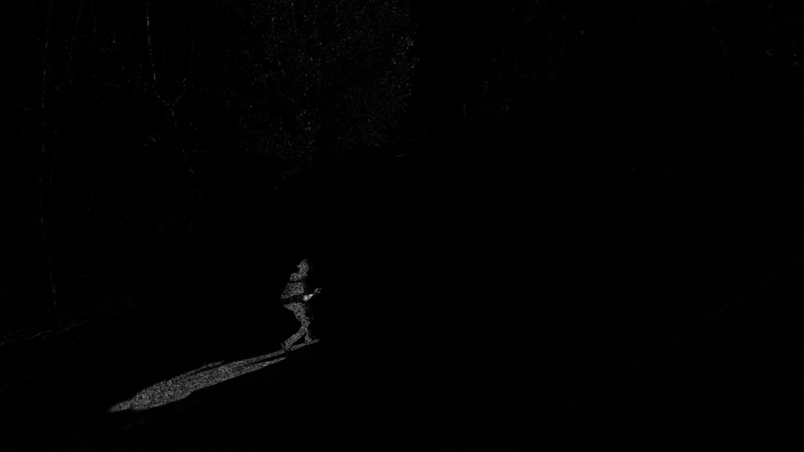
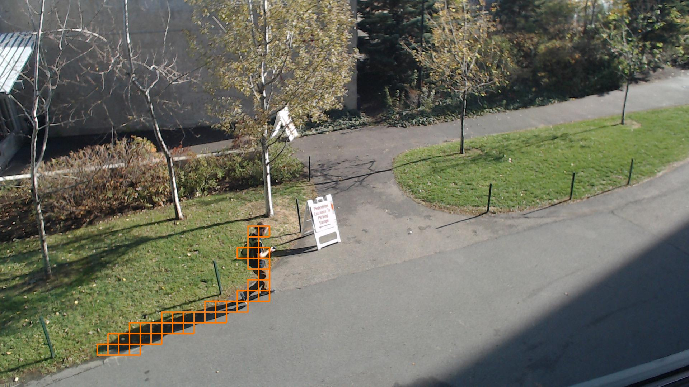
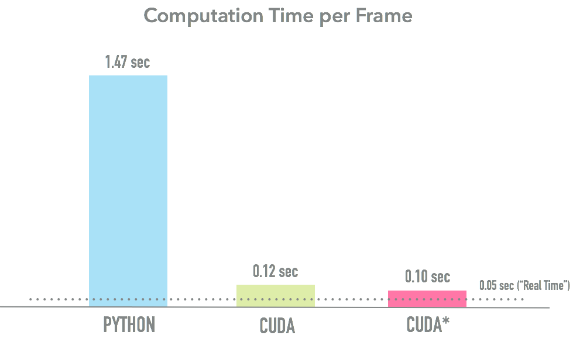

Project Overview
As society pushes toward the Internet of Things (IoT), surveillance technology has been greatly commoditized. As camera and information systems technology has improved, there has been an increase in the number of camera systems used to monitor and protect public and private spaces alike. Common venues for surveillance include city streets, secured private spaces such as an industrial complex, and even individual residences. The volume of data that is being recorded from deployed surveillance technology has outgrown the capacity of human operators. With the rise in surveillance technology, there is a greater need for autonomous monitoring of the data feeds coming from these monitoring systems. This is particularly true of facilities with multiple cameras distributed across various sites being fed into a central monitoring system.
This project, completed for the Fall 2015 CS205 course at Harvard University, attempts to provide a foundation to automate anomaly detection in surveilance video, utilizing contemporary methods of parallel computing. The focus of this project, computationally, was to develop a detection algorithm that will run in real-time and provide decision support for an operator tasked with monitoring multiple camera feeds. To acheive this desired benchmark the processing, detection, and decision algorithms (catalogued below) were written in C and Python (leveraging the PyCUDA module) and run on a designated NVIDIA Jetson TK1.
Hardware Setup
We gathered simulated surveillance data by orienting a webcam to monitor an infrequently traversed sidewalk behind the Northwest Laboratory Building on the northern end of Harvard's campus.

To process the images and determine any anomalous behavior, algorithms were implemented in Python's PyCUDA module and run on a specially designated NVIDIA Jetson TK1 GPU. This particular GPU was allocated with the intent of optimally parallelizing our algorithms with the goal of acheiving real-time processing, detection, and identification. For our purposes, real-time is analogous to process time less than or equal to a normal collection frame rate of 20 frames per second (fps).
|  | To test our algorithm we collected batches of 300-400 frames, at 20 frames per second, at times when it was likely that individuals would be crossing through our monitoring area of interest. With our image stack, we ran each frame through the following process (to be described in greater detail below): 1) Compare, pixel-by-pixel, the intensity of the current frame against a running average of all previous frames, identifying those outlying pixels that are significantly different from the mean intensity. 2) Perform a minimum filter to remove speckle noise. 3) Aggregate outlying pixels to form superpixels. If a majority of pixels within a superpixel are outliers, then the entire superpixel is then marked anomalous. 4) Create an overlay on the original frame to mark anomalous regions and alert surveillance operator. |
Code Workflow
To detect, locate, and determine anomalies in the surveillance feed, frames are passed through the following processes:
- Perform a running gaussian average on frame
- Pass frame through 3x3 minimum filter
- Aggregate into superpixels and flag all anomalous behavior
By means of example, we will walk through our algorithm using the below representative frame, which includes an "intruder" within our monitoring region.
1. Running Gaussian Average
Passing an image through a running gaussian average is a conventional approach used to designate foreground pixels from those considered to be in the background. The background is calculated by updating the mean and variance of each pixel from subsequent frames to calculate if that particular pixel does not differ from the prior mean (scaled by the variance) by more than a specified threshold value.
The output of a running gaussian average can either be a binary mask of foreground/background pixels or a continuous representation of each pixels deviation from the pixel mean, scaled by the variance of that pixel. In order to provide more dynamic thresholding later in the algorithm, we chose to return the latter.
At the time the intruder appears, the calculated background appears like this:

The running gaussian average serves to highlight all significant differences in the current frame from that calculated background. Any pixel that signifcantly varies from that will be highlighted after comparison with the background. What you see in the image below is that the intruder and his shadow stand out, as do the rustling leaves in the trees due to a slight breeze.
2. 3x3 Minimum Filter
While the running gaussian average is generally robust to slight movements and light variations, the output of the running gaussian average is generally rife with speckle noise. To smooth out the ouput and effectively account for this noise, we apply a 3x3 minimum filter to each frame after the running gaussian average. That is, every pixel will take on the minimum value of the adjacent pixels that surround it. After passing through this filter, the frame is nearly absent of any noise caused by small variations in the background while prominently featuring our target.
3. Aggregate into Superpixels and flag detected anomalies
In order to characterize whether the remaining pixels form an anomaly, the frame is segmented into superpixels, a collection of neighboring pixels. Superpixels can provide generic information about a larger region of pixels and are thereby used to infer general attributes about that region. We determine that a superpixel is an anomaly if a large portion of its members represent a foreground variation in our scene. This and all other detected anomalies are then flagged and used to highlight the surveillance operator.
Performance
When the idea of automating anomaly detection was conceived, implicit in the program design was to have the final algorithm be capable of online operation. To acheive that level of performance, the processing and determination of anomalies would ideally be completed in real-time. That is, there would be little to no lag between data acquisition and display of any anomalous behavior. Our acquisition system was configured to 20 fps, setting our benchmark performance to 0.05 seconds of processing time per frame.
To characterize the computational benefit of parallel operation on a GPU, we also implemented a serial implementation of our detection algorithm, utilizing the NumPy package for scientific computing for Python. As seen in the below chart, we were able to achieve a respectable 1.47 seconds per frame performance. We admit that one could certainly optimize this performance further by utilizing cython and other kinds of low-level wrappers in Python. We chose however to prioritize our benchmark of real-time processing on the GPU, and allocated our time and effort to that end.
Our initial results when running our algorithm on the GPU provided an astounding 15x speedup over our serial Python implementation. The average processing time was 0.12 seconds per frame, accounting for the time taken to process the running gaussian average, 3x3 minimum filter, and superpixel aggregation modules of our algorithm. We timed these modules separately from the loading and writing of each frame as we anticipate that these operations would be done asynchronously with a more powerful CPU than is included with the NVIDIA Jetson TK1. The same timing paradigm was used to measure the performance of our serial implementation.
We were advised to further optimize our parallel implementation on the GPU by improving the superpixel aggregation module via better use of coalesced reads of memory and using parallel reduction instruction primitives native to NVIDIA's Kepler core. After implementing these optimizations we reduced our processing time by ~15%, achieving 0.10 seconds per frame. Although we ultimately failed to meet our benchmark of 0.05 seconds per frame, we are extremely satisfied by the speed-up we acheived through parallel implementation of our algorithm.
Included below are tables outlining the performance of each module (per frame average) in our serial and parallel algorithm implementations respectively.
| Module | Serial Time (s) | Parallel Time (s) |
|---|---|---|
| Running Gaussian Average | 0.086950 | 0.015687 |
| 3x3 Minimum Filter | 0.222865 | 0.021578 |
| Superpixel Aggregation | 1.126063 | 0.072363 |
Summary and Conclusions
The goal of this project was to automate anomaly detection in surveillance video, providing decision support to a human operator. Complementary to that effort was to do so efficiently and in real-time. We feel as though we acheived our primary goal and are satisfied with the strides we made in driving our algorithm performance as close to the benchmark processing time of 0.05 seconds per frame as we ultimately were able to. We're grateful for the guidance we received from our professor Thouis (Ray) Jones; his advice, instruction, and energetic support of our efforts truly facilitated our success.
Image processing insights
Implementing most image processing methods are relatively intuitive and straightforward. However, doing so without accounting for subsequent use of the output can lead to unintended consequences. We learned that by sharing common steps across different modules in a process pipeline, the complete algorithm will perform in a much more streamlined and efficient manner.
One improvement that we could make with our image processing algorithm would be to have a longer period of viewing time without any anomalous motion so as to calculate a more robust background scene. With this, we would be better able to account for large variation in lighting conditions. We found that at different times of day, the colors and intensity of each pixel changed drastically. This issue was magnified when we sampled frames at a less frequent rate.
Another large issue we faced in processing our image data was the effect of extremely high and low intensity regions (think of sun reflections vs. shadows of surrounding buildings) of our background. When the foreground, or anomalous objects, crossed through these regions, the filtering and detection modules would alias the intersection, ultimately leading to a bias in favor of the background. One supposed fix to this is to preprocess our input frames by a localized neighborhood of each pixel, smoothing out large variances. Or, in other words, by iteratively performing a median filter.
Parallelization insights
From this project we grew to appreciate the effort that goes into efficiently parallelizing code, most particularly when accounting for indexing across multiple threads and blocks. Managing this aspect of programming in CUDA was easily the most challenging for us.
The largest barriers we faced when searching for faster performance were I/O and memory constraints. We didn't have the best throughput from CPU to GPU and back, andwe found that we were limited by the ARM processor included with the Jetson TK1. We believe that if we were operating our algorithm with a more powerful processor, we could reduce the limitations we faced by asynchronously loading and processing the images across the GPU, reducing lag time and improving device efficiency.
Language insights
Our largest hesitation when undertaking this project was working within the CUDA and C programming languages. We had little to no experience with these languages before this project. We had little understanding of how a GPU could be leveraged to perform scientific computation. We are grateful for this opportunity to interact directly with such a device that was designated for this project. We are now much more familiar with some of the intricacies of these languages and what considerations one needs to take when utlizing such powerful code.
We understand that there are significant improvements that could be made to our C/CUDA kernels, and we are are motivated to continue developing proficiency in GPU programming as we have seen first-hand the benefit graphical processing can provide to computational success.